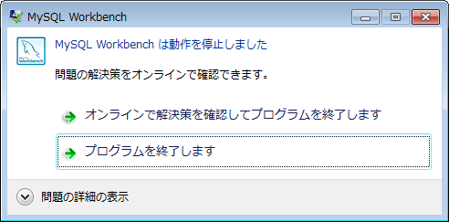

2012年3月31日
■現象
MySQL Workbenchが起動しない。
動作を停止しました。
■環境
MySQL 5.5.22 win32
MySQL Workbench 5.2.38 （mysql-5.5.22-win32.msi）
Windows7 Professional SP1 32bit
■現象の詳細
スタートアップから起動しても以下のエラー画面が表示されて起動しない。

■問題の詳細
問題イベント名: APPCRASH
アプリケーション名: MySQLWorkbench.exe
アプリケーションのバージョン: 5.2.38.8753
アプリケーションのタイムスタンプ: 4f43fc17
障害モジュールの名前: MSVCR100.dll
障害モジュールのバージョン: 10.0.40219.325
障害モジュールのタイムスタンプ: 4df2be1e
例外コード: c0000005
例外オフセット: 0007d07e
OS バージョン: 6.1.7601.2.1.0.256.48
ロケール ID: 1041
追加情報 1: 0a9e
追加情報 2: 0a9e372d3b4ad19135b953a78882e789
追加情報 3: 0a9e
追加情報 4: 0a9e372d3b4ad19135b953a78882e789
■インストールしてから問題発生までの操作履歴
MySQL Workbench 5.2.38（mysql-5.5.22-win32.msi）をインストールした。
初回はスタートメニューから起動できた。
その際には、localhostのMySQLサーバに接続し、デフォルトデータベースのtestを参照できた。
しかし、試しに、ツールバーの「Reconnect to DBMS」を押したところ、
操作が終了しなくなったため、タスクマネージャで強制終了した。
その後は、スタートメニューから起動しなくなった。
■情報
APPCRASHに関するバグレポートを参考に「vcredist_x86.exe」をインストールしてみたが現象は変わらず。
■参考
http://stackoverflow.com/questions/7781061/mysql-workbench-crashed-and-wont-turn-on-again-specific-error-is-shown
■起動できた方法
コマンドプロンプトを「管理者として実行」して
C:\Program Files\MySQL\MySQL Workbench 5.2 CE>MySQLWorkbench
で起動するとMySQLWorkbenchが開始できた。
スタートメニューからも同様に「管理者として実行」すると起動できた。
■その他
「管理者として実行」・・・スタートメニューの該当項目（コマンドプロンプトなど）を右クリックするとメニューに出てくる。
以上
NextDesign 2017.1.30